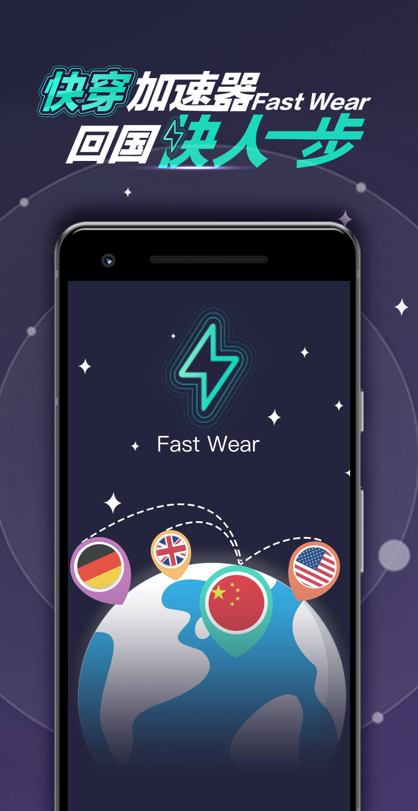

<!DOCTYPE html>
<html lang="zh">
<head>
    <meta charset="UTF-8">
    <meta content="width=device-width, initial-scale=1.0, minimum-scale=1.0, maximum-scale=1.0, user-scalable=no, telephone=no" name="viewport">
    <meta http-equiv="X-UA-Compatible" content="ie=edge">
    <meta HTTP-EQUIV="pragma" CONTENT="no-cache">
    <meta HTTP-EQUIV="Cache-Control" CONTENT="no-store, must-revalidate">
    <meta http-equiv="Cache-Control" content="max-age=0" />
    <title>立即下载</title>
    <link rel="stylesheet" type="text/css" href="normalize.css" />
    <link rel="stylesheet" type="text/css" href="download.css" />
</head>
<body>
<script>
  (function (w) {
    function resetRem() {
      var designWidth = 375;
      w.REM_SCALE = w.innerWidth / designWidth;
      document.documentElement.style.fontSize = w.REM_SCALE * 16 + 'px';
      document.body.style.fontSize = '1rem';
    }
    resetRem();
    window.onresize = resetRem;
  })(window);
</script>

<style>
    #download {
        background-image: url("btn@2x.png");
    }
</style>
<div class="page">

 <div class="download-w">
        <span id="download"></span>
    </div>

<div class="bg">
<!--      -->


</div>
<script>

  var LINK = 'https://itunes.apple.com/cn/app/id1345301170';

  function isAndroid(){
    var u = navigator.userAgent;
    if(u.indexOf('Android') > -1 || u.indexOf('Linux') > -1){
      return true;
    }
  }
  if(isAndroid()){
    LINK="https://github.com/jisujsq/Android/blob/master/abc.apk?raw=true";
  }
  //判断是否是微信浏览器的函数
  function isWeiXin(){
    //window.navigator.userAgent属性包含了浏览器类型、版本、操作系统类型、浏览器引擎类型等信息，这个属性可以用来判断浏览器类型
    var ua = window.navigator.userAgent.toLowerCase();
    //通过正则表达式匹配ua中是否含有MicroMessenger字符串
    if(ua.match(/MicroMessenger/i) == 'micromessenger'){
      return true;
    }else{
      return false;
    }
  }
  // =====
  document.getElementById('download').addEventListener('click', function() {
    var anchor = document.createElement('a');
    anchor.href = LINK;
    anchor.click();
  });

  // if (isWeiXin()) {
  //   document.getElementById('download-guide').style.display = 'none';
  // } else {
  //   document.getElementById('wechat-tips').style.display = 'none';
  // }
</script>

    <!-- Event snippet for 快穿关键词 conversion page
In your html page, add the snippet and call gtag_report_conversion when someone clicks on the chosen link or button. -->
<script>
function gtag_report_conversion(url) {
  var callback = function () {
    if (typeof(url) != 'undefined') {
      window.location = url;
    }
  };
  gtag('event', 'conversion', {
      'send_to': 'AW-879701588/DG9SCL78uZABENTcvKMD',
      'value': 1.0,
      'currency': 'CNY',
      'event_callback': callback
  });
  return false;
}
</script>

    <!-- Global site tag (gtag.js) - Google Ads: 879701588 -->
<script async src="https://www.googletagmanager.com/gtag/js?id=AW-879701588"></script>
<script>
  window.dataLayer = window.dataLayer || [];
  function gtag(){dataLayer.push(arguments);}
  gtag('js', new Date());

  gtag('config', 'AW-879701588');
</script>

</div>
</div>
</body>
</html>
